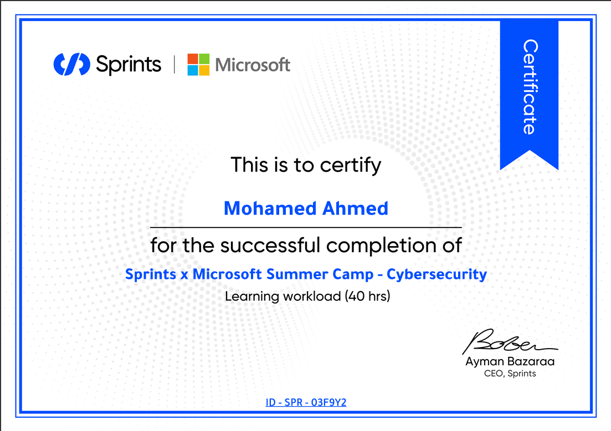
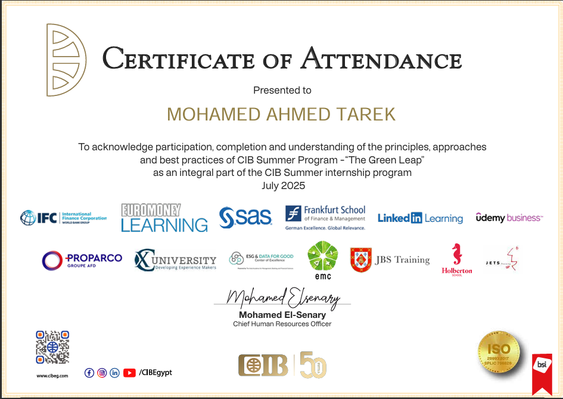

I am a junior Cyber Security professional with a passion for Penetration Testing and ethical hacking. I enjoy analyzing systems, identifying security vulnerabilities, and understanding attack techniques to strengthen overall security. I have a solid foundation in networking, Linux, and web security fundamentals, along with hands-on practice using security tools and labs. I am highly motivated to learn, improve, and gain real-world experience in offensive security.
Technical Skills
Key Projects
Web Security Labs
Hands-on web exploitation labs with structured write-ups on web vulnerabilities like SQL Injection · XSS · CSRF · XXE · SSRF · Auth/Access Control
View LapsSecure-Software-Development-Project-Vulnerability-Assessment
Hands-on experience in web security, including vulnerability analysis, exploitation practice, and writing structured reports with remediation recommendations.
View LabsOWASP Juice Shop
Hands-on experience in web security, including vulnerability analysis, exploitation practice, and writing structured reports with remediation recommendations.
View LabsCryptography
Implemented and practiced classical cryptographic algorithms including Caesar, Monoalphabetic, Playfair, Vigenère, Rail Fence, and Row Transposition ciphers through hands-on projects.
View LabsCertifications & Training
Vulnerability Assessment & Pentesting
Digital Egypt Pioneers Initiative (DEPI)

Sprints x Microsoft Summer Camp
Cybersecurity Track • 40 Hours
.png)
Intro to cybersecurity
Cisco Networking Academy

CIB Summer Program
Commercial International Bank (CIB) Egypt